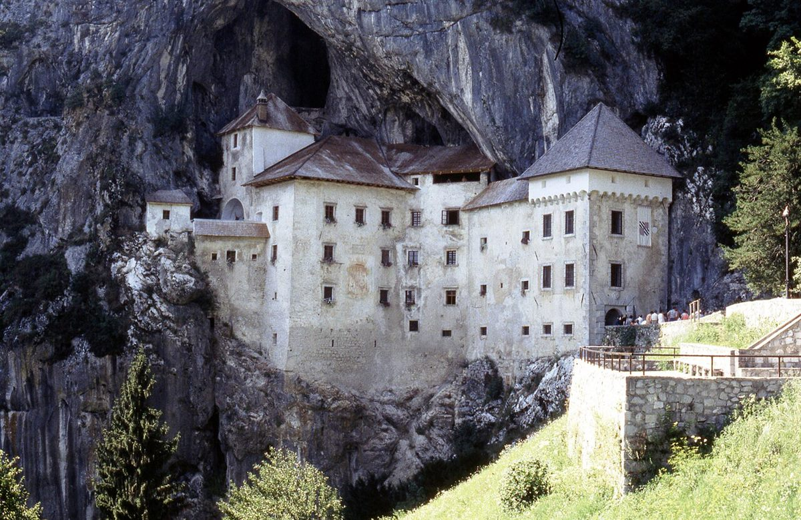
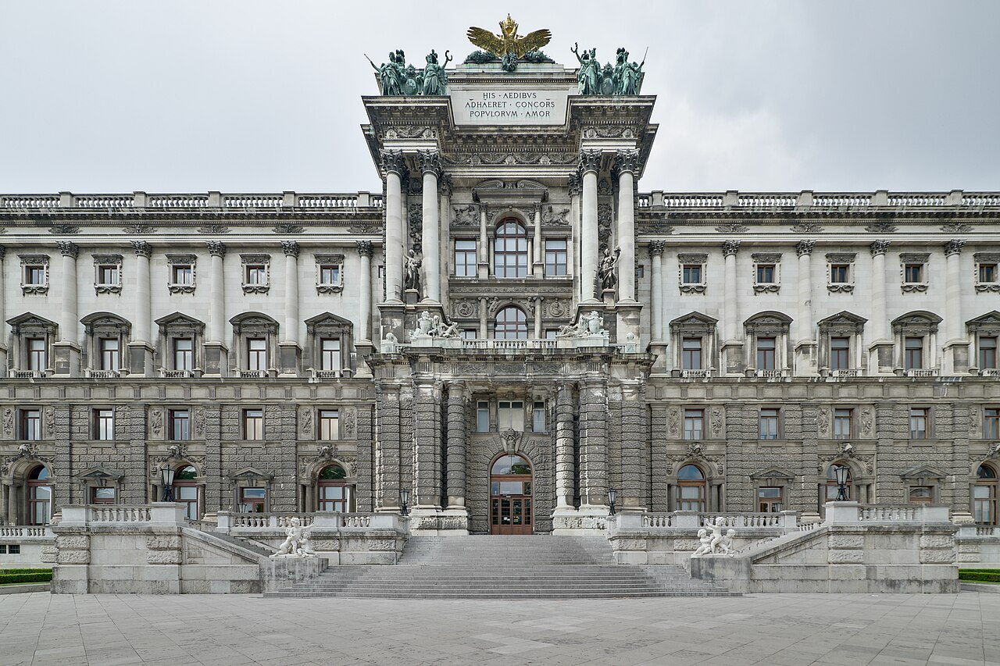

자그레브 류블랴나
일반- 수단
- 기차 · EC·국제 열차 직행
- 소요
- 약 2시간 20분
- 환승
- 직행
하루 4~6회. FlixBus도 2시간 20분 안팎.
아드리아해 · 중부유럽
Advent in Zagreb – Ljubljana – Graz
유럽 베스트 크리스마스 마켓에 세 번 뽑힌 자그레브에서 시작하는 12월 전용 코스.



자그레브는 European Best Destinations 투표에서 3년 연속 최고의 크리스마스 마켓으로 뽑혔고, CNN의 2025년 목록에도 올랐습니다. 류블랴나(2026/27 시즌 11월 27일~1월 3일)와 그라츠까지 기차로 이어 비엔나에서 귀국합니다.


지도: © OpenStreetMap 기여자
현지 6박 7일 · 자그레브 2박 → 류블랴나 2박 → 그라츠 2박
도착 인천 → 자그레브 공항. 도착일은 숙소 주변 위주로 가볍게.
반 옐라치치 광장 → 돌라츠 시장 → 자그레브 대성당 → 성 마르코 성당 → 로트르슈차크 탑 → 실연 박물관.
12월 "어드벤트 자그레브"는 유럽 최고 크리스마스 마켓으로 여러 번 뽑혔습니다.
숙박: 자그레브
레누치 말굽 공원 → 미마라 박물관 → 트칼치체바 카페 거리 → 미로고이 묘지.
숙박: 자그레브
이동 자그레브 → 류블랴나 · 기차 약 2시간 20분 일반
프레셰렌 광장 → 삼중교 → 플레치니크 시장 → 용의 다리 → 류블랴나 성(푸니쿨라) → 류블랴니차 강변 카페.
금요일(봄~가을)에는 "오픈 키친" 음식 장터가 열립니다.
숙박: 류블랴나
버스 약 1시간 → 포스토이나 동굴 열차 투어 → 절벽에 박힌 프레드야마 성(여름 셔틀).
동굴 안은 일 년 내내 10℃ 안팎입니다.
숙박: 류블랴나
이동 류블랴나 → 그라츠 · 기차 약 3시간 30분 일반
하우프트 광장 → 슐로스베르크 시계탑(리프트·계단) → 무어인젤 → 쿤스트하우스 → 무기 박물관.
구시가지와 에겐베르크성이 유네스코 세계유산입니다.
숙박: 그라츠
그라츠에서 못 본 곳을 다시 찾거나 카페·시장에서 쉬어 가는 날.
숙박: 그라츠
이동 그라츠 → 비엔나 · 기차 약 2시간 35분 일반
그라츠에서 비엔나(으)로 이동해 출국합니다. 이동 시간에 공항 수속 2~3시간을 더해 항공편을 고르세요. 귀국편은 대부분 다음 날 한국에 도착합니다.
하루 4~6회. FlixBus도 2시간 20분 안팎.
3시간~3시간 30분.
1시간 간격.
마지막 숙박지에서 출국 공항 도시까지의 이동입니다.
국경 모두 솅겐 지역입니다.
2026년에는 7~10월에 직항을 운영했습니다. 다음 시즌 운항 여부와 기간은 발표를 확인하세요. 그 밖의 달에는 경유가 필요합니다.
12월
12월 외에는 다른 루트를 추천합니다
마켓 기간은 해마다 다릅니다. 대체로 11월 말 개막, 1월 초 폐막. 12월 24~26일·31일 운영 시간은 따로 확인하세요.



중기·장기(7~8박) · 3개국 · 추천 5·9·12월
첫 동유럽 여행의 정석. 직항으로 들어가 직항으로 나오고, 세 도시를 레일젯 직행으로 잇습니다.


중기(5~6박) · 2개국 · 추천 5·9·10월
프라하에 동화 같은 중세 마을 하나를 더해 비엔나로 빠져나가는 일주일 코스.


중기·장기(7~9박) · 3개국 · 추천 4·5·9월
비엔나를 건너뛰고 체코·슬로바키아·헝가리 세 나라를 한 철도 노선으로 잇는 실속 코스.


중기(5~6박) · 3개국 · 추천 4·10·12월
도나우강을 따라 세 수도를 잇는 5~7박 단기 코스. 12월 크리스마스 마켓 여행으로 특히 인기.
정보 확인일 2026-11-21